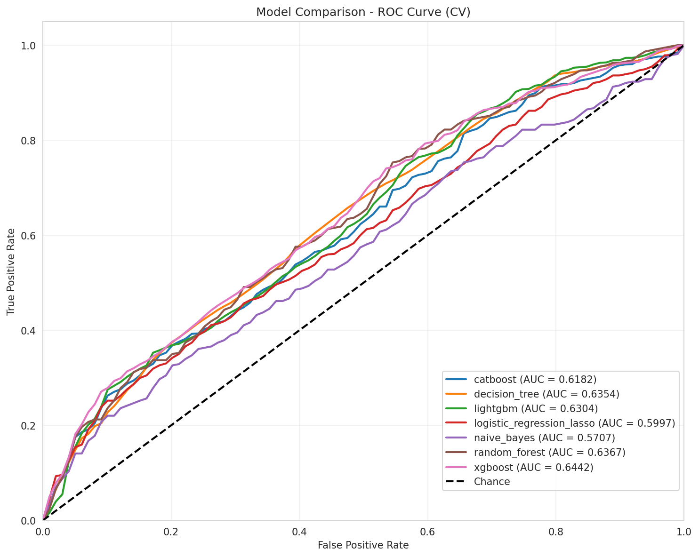
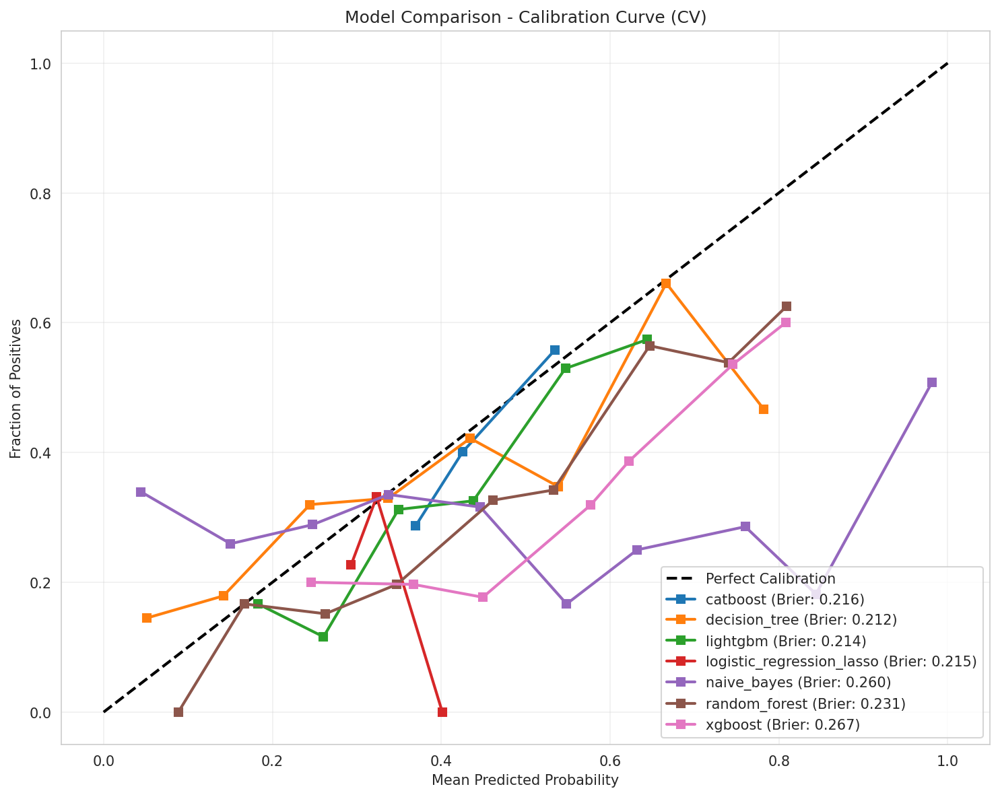
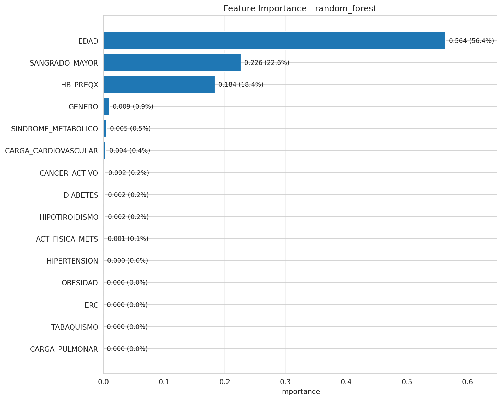
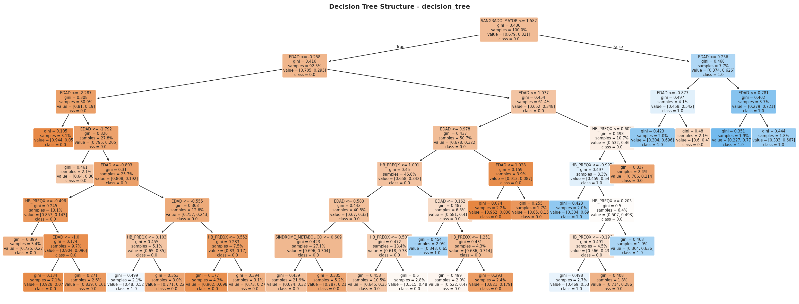
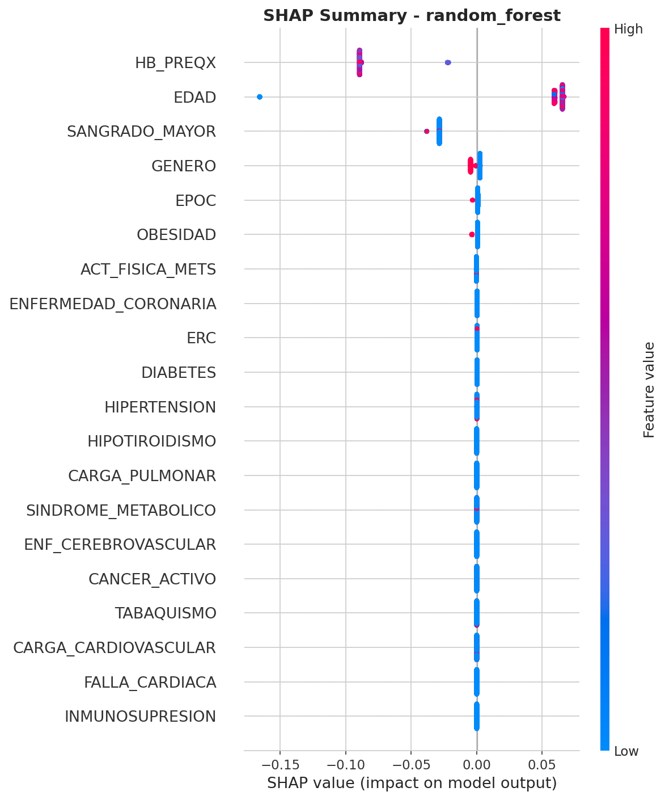
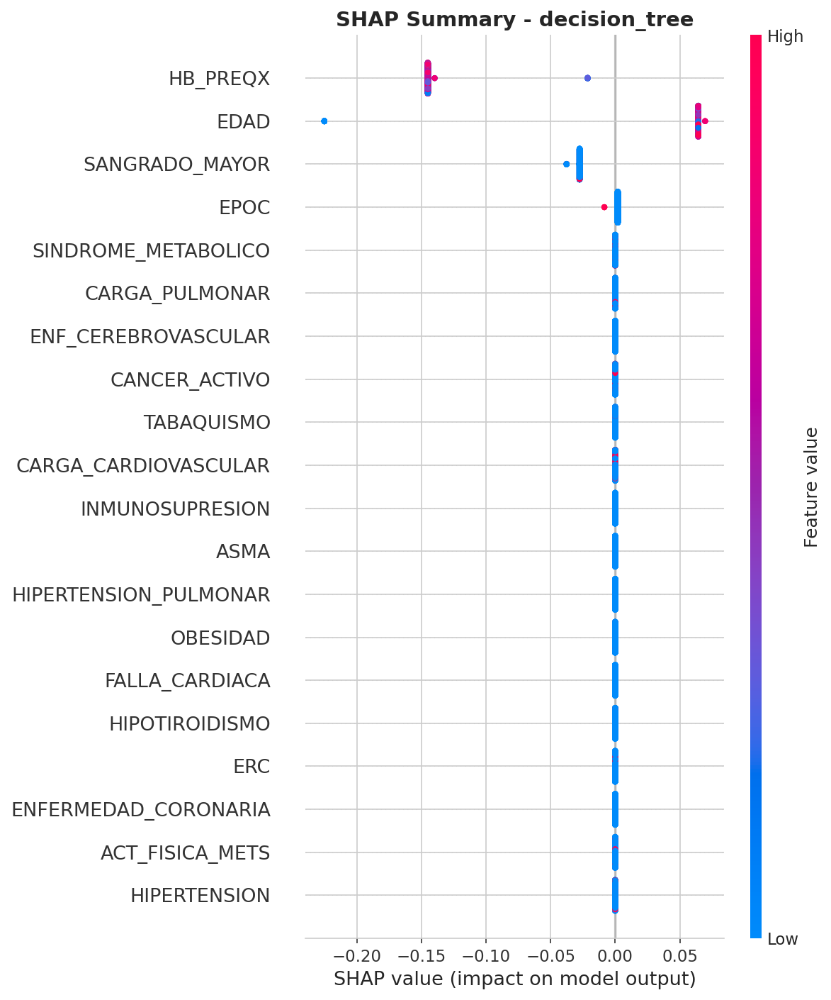

Objetivo: optimizar hiperparametros via RandomizedSearchCV (100 iteraciones)
| Modelo | AUC ROC | Brier Score | Δ vs Exp4 | Posicion |
|---|---|---|---|---|
| random_forest | 0.6407 | 0.2289 | +0.0604 | 1 |
| lightgbm | 0.6384 | 0.2063 | +0.0390 | 2 |
| xgboost | 0.6371 | 0.2070 | +0.0333 | 3 |
| decision_tree | 0.6367 | 0.2117 | +0.0833 | 4 |
| catboost | 0.6215 | 0.2083 | -0.0022 | 5 |
| logistic_regression_lasso | 0.6068 | 0.2396 | +0.0001 | 6 |
| naive_bayes | 0.5707 | 0.2598 | +0.0008 | 7 |






Hyperparameter search genera mejoras dramaticas. Random Forest sube a 0.6407 (+6.04% vs Exp4), LightGBM 0.6384 con mejor Brier 0.2063. Decision Tree optimizado salta a 0.6367 (+8.33%), depth=7, 27 hojas. Top features consistentes: EDAD (49-53%), HB_PREQX (25-28%), SANGRADO_MAYOR (15-24%). Tuning desbloquea performance latente en modelos simples.